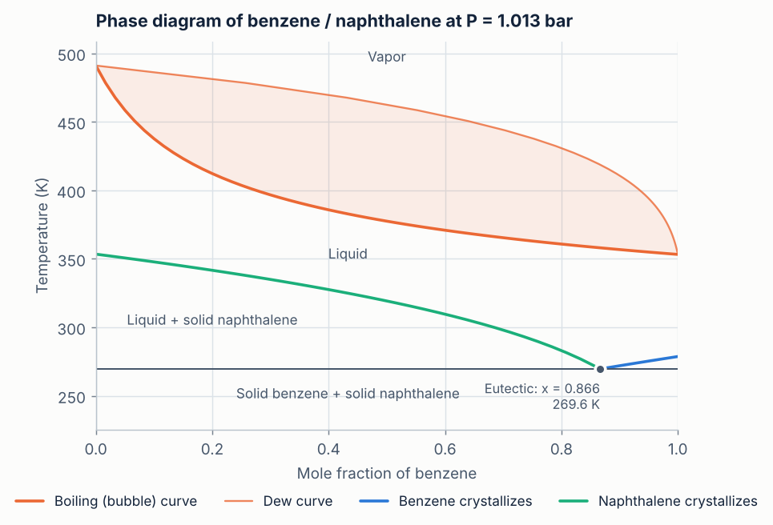
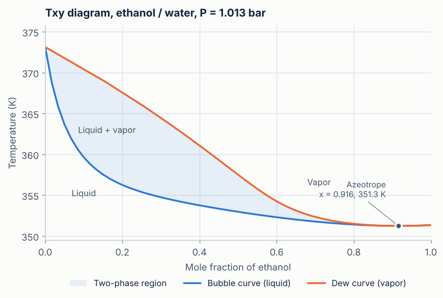
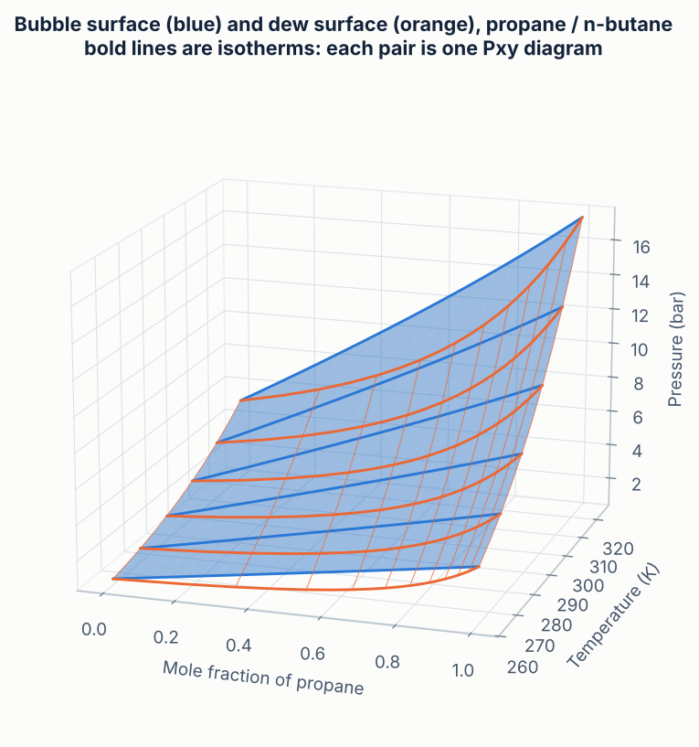
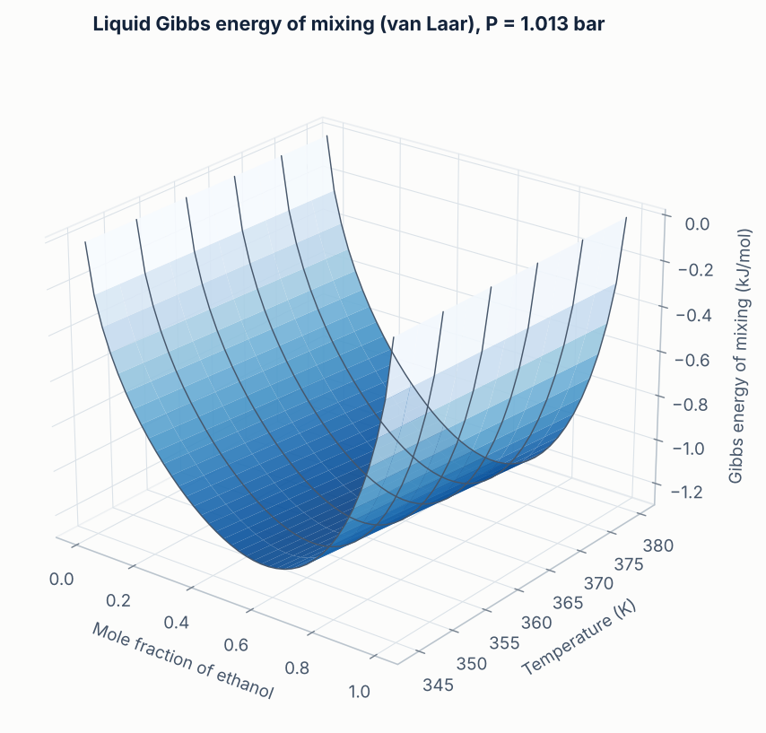
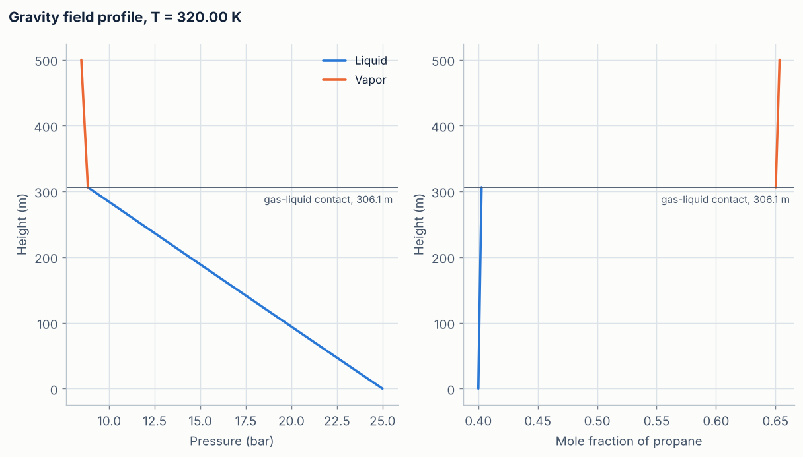

Contents
What the tool does
This is a course project for Chemical Engineering Thermodynamics. You describe a mixture in plain text by listing what you know about it. The tool decides what can be calculated from that, solves the equilibrium conditions, and reports phase compositions, saturation points and phase diagrams, and, in a field, how pressure and composition vary with position. It then draws the results.
The central idea is that the information you have decides the route. There is no fixed set of required inputs. Critical constants allow an equation of state; vapor pressures or a boiling point with its latent heat give the pure-liquid fugacity; a melting point with its enthalpy of fusion gives the fugacity of a solid; activity-coefficient parameters correct the liquid for non-ideal mixing. The checker combines whatever is given, reports every equilibrium it can decide, and says exactly what is missing for the rest.
| If you know | The tool can calculate |
|---|---|
| \(T_c, P_c, \omega\) (or van der Waals \(a, b\)) for each component | Both phases from one cubic equation of state, valid at high pressure, with densities |
| Antoine constants, a typed \(P^{\mathrm{sat}}(T)\) relation, or \(T_b\) with \(\Delta H_{\mathrm{vap}}\) | Vapor–liquid equilibrium through the pure-liquid fugacity |
| Activity-model parameters (Margules, van Laar or NRTL) | Non-ideal liquids: azeotropes, larger deviations from Raoult's law |
| \(T_m\) with \(\Delta H_{\mathrm{fus}}\) (and optionally \(\Delta C_p\)) | Solid–liquid equilibrium: freezing and solubility curves, the eutectic |
| That a component never vaporizes | It is kept out of the vapor; it still takes part in solid–liquid equilibrium |
| Molar masses, plus liquid volumes when there is no equation of state | Pressure and composition profiles in a gravity or centrifugal field |
Every route ends in the same place: the chemical potential of each component in each phase, from the fundamental equation. One equilibrium solver therefore serves all of them, and different routes can be combined in one system.
Theory
The tool starts from the fundamental equation, derives the equilibrium criteria and the phase rule from it, and then uses whichever model the available data support to supply the chemical potentials.
The fundamental equation and why the Helmholtz form
For a simple system of \(n\) components, the fundamental equation in energy form is
\[ dU = T\,dS - P\,dV + \sum_{i=1}^{n} \mu_i\,dN_i . \]Its Legendre transforms contain exactly the same information in different natural variables. The tool uses the Helmholtz energy \(A = U - TS\),
\[ dA = -S\,dT - P\,dV + \sum_{i} \mu_i\,dN_i , \]from which pressure and chemical potentials are derivatives:
\[ P = -\left(\frac{\partial A}{\partial V}\right)_{T,\mathbf N}, \qquad \mu_i = \left(\frac{\partial A}{\partial N_i}\right)_{T,V,N_{j\neq i}} . \]The reason is practical. A cubic equation of state gives pressure as a function of \(T\), \(V\) and composition, which are exactly the natural variables of \(A\). One integration over volume turns the equation of state into a complete fundamental relation, and everything else follows by differentiation. The Gibbs form is used where its natural variables \(T\) and \(P\) fit better: for solutions and solids, below.
Equilibrium criteria and the phase rule
Maximizing entropy (equivalently, minimizing \(A\) at fixed \(T\) and \(V\)) for phases that can exchange energy, volume and matter gives uniform \(T\) and \(P\), and equal chemical potentials of every component in every phase. Written with fugacities, which is the form the solver uses:
\[ \mu_i^{\alpha} = \mu_i^{\beta} \quad\Longleftrightarrow\quad \hat f_i^{\alpha}(T,P,\mathbf x^{\alpha}) = \hat f_i^{\beta}(T,P,\mathbf x^{\beta}) . \]Each phase has \(n+2\) independent variables, one fewer for its intensive state by the Gibbs–Duhem equation. An external field adds one work term, so \(m\) more for \(m\) fields. Subtracting the equilibrium constraints from the variables gives the number of intensive variables that can be fixed independently:
\[ F = n + 2 + m - \pi . \]For a closed system with a known feed composition, Duhem's theorem applies instead: \(2 + m\) variables fix the state. The input checker uses these counts, with \(m = 1\) when a gravity or centrifugal field is present.
Cubic equations of state in Helmholtz form
The three cubic equations share one form and differ in two constants and in how \(a\) depends on temperature:
\[ P = \frac{RT}{v-b} - \frac{a(T)}{(v+\delta_1 b)(v+\delta_2 b)} \]| Model | \(\delta_1\) | \(\delta_2\) | \(a\) depends on \(T\) | Data per component |
|---|---|---|---|---|
| van der Waals | 0 | 0 | no | \(T_c, P_c\) or \(a, b\) |
| Soave–Redlich–Kwong | 1 | 0 | yes | \(T_c, P_c, \omega\) |
| Peng–Robinson | \(1+\sqrt2\) | \(1-\sqrt2\) | yes | \(T_c, P_c, \omega\) |
For SRK and PR, \(a(T) = a_c\,[1 + m(1-\sqrt{T/T_c})]^2\), with
\[ \begin{aligned} m_{\text{SRK}} &= 0.480 + 1.574\,\omega - 0.176\,\omega^2 \\ m_{\text{PR}} &= 0.37464 + 1.54226\,\omega - 0.26992\,\omega^2 \end{aligned} \]For mixtures, the van der Waals one-fluid mixing rules apply, with one binary interaction parameter per pair:
\[ a = \sum_i\sum_j x_i x_j \sqrt{a_i a_j}\,(1-k_{ij}), \qquad b = \sum_i x_i b_i . \]Integrating \(P - NRT/V\) over volume from the ideal-gas limit gives the residual Helmholtz energy in closed form,
\[ \frac{A^{\mathrm{res}}}{NRT} = -\ln\!\left(1-\frac{b}{v}\right) - \frac{a}{bRT(\delta_1-\delta_2)}\,\ln\frac{v+\delta_1 b}{v+\delta_2 b} , \]which reduces to \(-\ln(1-b/v) - a/(RTv)\) for van der Waals. The fugacity coefficient of each component is one derivative of it:
\[ \ln\hat\varphi_i = \left(\frac{\partial\,(A^{\mathrm{res}}/RT)}{\partial N_i}\right)_{T,V,N_{j\neq i}} - \ln Z , \qquad \hat f_i = x_i\,\hat\varphi_i\,P . \]At a given \(T\) and \(P\) the cubic in \(Z\) can have three real roots. The smallest is used for a liquid, the largest for a vapor, and the root with the lower Gibbs energy when the phase is not known.
Solutions and solids: the Gibbs-energy route
Without an equation of state, each component's fugacity is built from its pure-component properties and an activity coefficient:
\[ \hat f_i^{L} = x_i\,\gamma_i\,f_i^{L}, \qquad \hat f_i^{V} = y_i\,P . \]The pure-liquid fugacity includes the Poynting correction when a liquid volume is given:
\[ f_i^{L} = P_i^{\mathrm{sat}} \exp\!\left[\frac{V_i^{L}\,(P-P_i^{\mathrm{sat}})}{RT}\right] . \]The vapor pressure comes from whichever source the user gave: Antoine constants, a typed relation \(P^{\mathrm{sat}}(T)\), or the Clausius–Clapeyron equation from the normal boiling point and enthalpy of vaporization,
\[ \ln\frac{P^{\mathrm{sat}}}{P^{\circ}} = -\frac{\Delta H_{\mathrm{vap}}}{R}\left(\frac1T - \frac1{T_b}\right) . \]Activity coefficients are derivatives of an excess Gibbs energy, \(\ln\gamma_i = \partial(nG^E/RT)/\partial n_i\). Three simple models are available; with none chosen, \(\gamma_i = 1\) (an ideal solution).
\[ \text{Margules:}\quad \frac{G^E}{RT} = x_1x_2\,(A_{21}x_1 + A_{12}x_2) \] \[ \text{van Laar:}\quad \frac{G^E}{RT} = \frac{A_{12}A_{21}\,x_1x_2}{A_{12}x_1 + A_{21}x_2} \] \[ \text{NRTL:}\quad \frac{G^E}{RT} = \sum_i x_i\,\frac{\sum_j \tau_{ji}G_{ji}x_j}{\sum_k G_{ki}x_k}, \qquad \tau_{ij} = \frac{\Delta g_{ij}}{RT},\quad G_{ij} = e^{-\alpha_{ij}\tau_{ij}} \]For Margules and van Laar, \(A_{12} = \ln\gamma_1^{\infty}\), the value for component 1 at infinite dilution in component 2. That gives the parameters a direct physical meaning. NRTL works for any number of components.
For a pure solid, the Gibbs–Helmholtz equation integrated from the melting point gives its fugacity relative to the pure liquid:
\[ \ln\frac{f_i^{S}}{f_i^{L}} = -\frac{\Delta H_{\mathrm{fus}}}{R}\left(\frac1T - \frac1{T_m}\right) + \frac{\Delta C_p}{R}\left(\frac{T_m}{T} - 1 - \ln\frac{T_m}{T}\right) . \]A component that never vaporizes needs no vapor pressure at all: its pure-liquid fugacity appears on both sides of its own solid–liquid equation and cancels. So a full phase diagram can come from latent heats and melting points alone, for any mixture.
External fields
A gravity or centrifugal field does work on the mass of the system, so the fundamental equation gains a term \(\Phi\,dm\), with \(m = \sum_i M_i N_i\). The potential per unit mass is
\[ \Phi_{\text{gravity}} = g\,(z - z_{\mathrm{ref}}), \qquad \Phi_{\text{centrifugal}} = -\tfrac12\,\omega^2\,(r^2 - r_{\mathrm{ref}}^2) . \]The equilibrium criterion becomes: temperature is uniform, and \(\mu_i + M_i\Phi\) is the same everywhere. In fugacities,
\[ \ln \hat f_i(T, P, \mathbf x) + \frac{M_i\,\Phi}{RT} = \text{constant throughout the system}. \]Three consequences follow, and the tool shows each one.
The local phase diagram does not change. Two phases that coexist at one position have the same \(\Phi\), so the field term cancels between them. The Pxy diagram at the bottom of a column is the ordinary one.
Pressure varies hydrostatically, without being imposed. Summing \(x_i\,d\mu_i = -x_i M_i\,d\Phi\) over components and using the Gibbs–Duhem equation at constant temperature, \(\sum_i x_i\,d\mu_i = v\,dP\), gives \(dP = -\rho\,d\Phi\). The solver never uses this equation, yet its profiles satisfy it to about \(10^{-7}\) bar.
Composition varies with position, and phases can appear. The heavier component concentrates where \(\Phi\) is lowest. If the falling pressure brings the local fluid to saturation, a second phase forms there: a gas cap at the top of a tall liquid column, for example.
How it is built
The work runs as a pipeline. Each module takes the output of the previous one, so they can be developed and tested separately.
-
Input checker
input_checker.pyReads the free-form input, converts units, counts degrees of freedom and decides which equilibria can be calculated and how.
Built -
Thermodynamic models
thermo_models.pyTurns the checked input into a fugacity model for each phase: cubic EOS, solution with an activity model, ideal gas, pure solid, field potential.
Built -
Equilibrium solver
equilibrium_solver.pyBubble and dew points, flashes, diagrams with azeotropes, solid–liquid curves and the eutectic, field profiles.
Built -
Plotter
plotter.pyDiagrams, complete T–x diagrams, composition charts, field profiles, and 3D P–T–x and Gibbs-energy surfaces.
Built -
Validation
Comparison with experimental data, with average absolute deviations and fitted parameters.
Next -
Interface
A notebook or web page where the user types what they know and gets the diagrams.
Planned
Numerical methods
Vapor–liquid. With \(K_i = y_i/x_i = \hat\varphi_i^{L}/\hat\varphi_i^{V}\), a material balance on a feed \(\mathbf z\) split into a vapor fraction \(\beta\) gives the Rachford–Rice equation,
\[ \sum_i \frac{z_i\,(K_i-1)}{1+\beta\,(K_i-1)} = 0 . \]Setting \(\beta = 0\) gives a bubble point and \(\beta = 1\) a dew point, so one routine handles both, solving for the unknown \(T\) or \(P\) with Brent's method. Because \(K\) depends on the phase compositions, it is updated by successive substitution until it stops changing. For an equation of state, starting values come from Wilson's correlation,
\[ K_i \approx \frac{P_{c,i}}{P}\exp\!\left[5.373\,(1+\omega_i)\left(1-\frac{T_{c,i}}{T}\right)\right] , \]and a solution with \(\mathbf x = \mathbf y\) (the trivial solution near a critical point) is reported rather than returned. With an activity model, \(\mathbf x = \mathbf y\) can be a real azeotrope; the diagram routine finds it where \(y_1 - x_1\) changes sign.
Solid–liquid. One equation, \(\hat f_i^{L} = f_i^{S}\), solved for temperature or composition. The eutectic is the composition where the two liquidus curves meet.
Field profiles. At each position, the field equation above is solved for \(\ln P\) and the free mole fractions. The march starts at the reference position, uses the hydrostatic estimate \(P - \rho\,\Delta\Phi\) as the first guess, and halves any step that fails. After each step, the local fluid is tested against its own bubble or dew pressure. When saturation is crossed, the contact is located by bisection and the march continues in the new phase.
Describing a system
The user writes down what they know, one quantity per line, in any order, with units. Lines starting with # are comments. This input contains only boiling points, melting points and latent heats:
components = benzene, naphthalene
P = 1 atm
sweep = x # draw the full diagram in composition
benzene.Tb = 353.24 K
benzene.dHvap = 30.72 kJ/mol
benzene.Tm = 278.68 K
benzene.dHfus = 9.87 kJ/mol
naphthalene.Tb = 491.14 K
naphthalene.dHvap = 43.2 kJ/mol
naphthalene.Tm = 353.43 K
naphthalene.dHfus = 19.01 kJ/molFrom this, the checker finds three equilibria it can calculate: boiling, benzene crystallizing and naphthalene crystallizing. Three more lines would switch the liquid to an activity model, for example:
activity = vanlaar
A(benzene, naphthalene) = 0.10
A(naphthalene, benzene) = 0.08Property values in the examples are typical literature values for demonstration. Check them against a source you can cite before relying on the results.
What the checker reports
For every possible equilibrium (vapor–liquid, plus solid–liquid for any component with a melting point), the checker writes out the fundamental relation, chooses how each chemical potential will be calculated, counts the degrees of freedom, and gives a verdict:
- SUFFICIENT
- The data and the state specification are complete. It names the calculation, for example "Txy diagram at fixed P".
- INSUFFICIENT
- Lists what is missing, with alternatives (for example, either the acentric factor for the equation of state, or vapor pressures for the solution route), and suggests valid specifications.
- OVERSPECIFIED
- More intensive variables were fixed than the phase rule allows. It says how many to remove.
- INVALID
- The input itself is wrong: an unknown quantity (with a spelling suggestion), mole fractions that do not add up to 1, an unknown unit.
The example files in the repository cover each verdict:
File in examples/ | Verdict |
|---|
Recognized quantities
Run python input_checker.py --vocab for the full list. Units are converted to SI; if a unit is missing, a default is assumed and a warning is printed.
| Written as | Meaning |
|---|---|
components | Component names, comma separated, in the order used for compositions |
model | Equation of state: vdW, SRK or PR (optional) |
activity | Liquid activity model: ideal (default), margules, vanlaar or nrtl |
T, P | Temperature (K or C), pressure (Pa, kPa, bar, atm, mmHg, psi) |
x(L), x(V) or y, z, beta | Liquid, vapor and feed compositions; vapor fraction. Give \(n\) or \(n-1\) mole fractions. |
sweep | x, T or P: the variable swept to draw a diagram |
phases | Restrict to one equilibrium: L, V or L, S(name) |
name.Tc, .Pc, .omega, .a, .b | Equation-of-state constants |
name.antoine, .Psat, .Tb, .dHvap | Vapor pressure: Antoine constants with units, a relation in T, or boiling point and latent heat |
name.Tm, .dHfus, .dCp_fus | Melting point, enthalpy of fusion, heat-capacity change on melting |
name.M, .V_L, .V_S, .nonvolatile | Molar mass; liquid and solid molar volumes; the component never enters the vapor |
kij(name1, name2) | Binary interaction parameter of the equation of state (0 if not given) |
A(name1, name2) | Margules or van Laar parameter: \(\ln\gamma\) of name1 at infinite dilution in name2. Give both orders. |
dg(name1, name2), alpha(name1, name2) | NRTL energy \(g_{12} - g_{22}\) (both orders) and non-randomness (default 0.3) |
field, g, omega, height, radius, reference | Gravity or centrifugal field, its strength, its extent and the position where the given state applies |
A vapor pressure can be typed as a relation, for example water.Psat = exp(16.3872 - 3885.70/(T - 273.15 + 230.170)) [kPa, K]. The relation is parsed safely: only arithmetic, the variable T and the functions exp, log, ln, log10 and sqrt are allowed.
Worked examples
All numbers and charts in this section are computed by the tool itself (scripts/make_docs_data.py), from the files in examples/.
Propane / n-butane with three equations of state
The diagram at the top of the page is the Peng–Robinson Pxy diagram at 300 K with \(k_{ij} = 0.003\). At \(x_{\text{propane}} = 0.4\) the bubble pressure is bar, and the first vapor contains propane. The ends of the diagram are the vapor pressures of the pure components, so the three equations of state can be compared directly on pure propane:
| Model | Vapor pressure of propane at 300 K (bar) |
|---|---|
| van der Waals | |
| Soave–Redlich–Kwong | |
| Peng–Robinson | |
| Experimental (NIST) | ≈ 9.98 |
The van der Waals equation, with no acentric factor and a temperature-independent \(a\), is far off. SRK and PR, which tune \(a(T)\) to vapor-pressure behavior through \(\omega\), are within about 1%.
A complete phase diagram from latent heats alone
The benzene / naphthalene input above contains no critical constants and no vapor-pressure equation. From boiling points, melting points and latent heats, the tool calculates the boiling and dew curves, the curve along which each solid crystallizes, and the eutectic where both solids form together: K at \(x_{\text{benzene}} = \) , close to the measured eutectic of about 270 K. This mixture is close to ideal, so no activity model is needed.
Show data
The same input works for any mixture. Swap in the properties of other components, mark one as nonvolatile if it never vaporizes, or add an activity model if the liquid is strongly non-ideal.
Activity coefficients: the ethanol–water azeotrope
With vapor-pressure relations alone, an ideal solution cannot produce an azeotrope. Adding the two van Laar parameters \(A_{12} = 1.68\) and \(A_{21} = 0.92\) changes the diagram: the curves meet again at \(x_{\text{ethanol}} = \) and K. The measured azeotrope is at about 0.894 and 351.3 K.
Show data
Gravity: a 500 m column of propane / n-butane
A liquid with \(z_{\text{propane}} = 0.4\) at 320 K and 25 bar sits at the bottom of a 500 m column. Moving up, the pressure falls hydrostatically. At m the pressure reaches the local bubble pressure ( bar), and a gas cap forms above that height.
Show data
Centrifuge: ethanol–water at 20,000 rpm
An ethanol–water liquid at its bubble point (\(x_{\text{ethanol}} = 0.5\), 350 K, bar) is in contact with its vapor at \(r = 0.05\) m and fills the rotor out to \(r = 0.10\) m. The model is the solution route with typed vapor-pressure relations and liquid molar volumes.
| Radius (m) | Pressure (bar) | \(x_{\text{ethanol}}\) |
|---|
At the wall the liquid is at about bar and slightly depleted in ethanol, the lighter component. Its bubble pressure is far below this, so the wall region is a compressed liquid. The vapor–liquid diagram at any one radius is the ordinary one: the field changes where states are found, not the equilibrium between coexisting phases.
Plots
plotter.py solves an input file and draws everything its results contain, then saves the figures as PNG files:
# save every figure as PNG in plots/
python plotter.py examples/benzene_naphthalene.txt
# also open the figures in windows
python plotter.py examples/ethanol_water_vanlaar.txt --show
# skip the 3D surfaces (faster)
python plotter.py examples/propane_butane_pr_pxy.txt --no-3dWhich figures appear depends on the input. A swept composition gives Pxy or Txy and xy diagrams, plus a 3D P–T–x surface and, on the solution route, a Gibbs-energy-of-mixing surface. Solid–liquid curves at one pressure are combined with the boiling curves into one complete T–x diagram. A single state is marked on its diagram with its tie line. Flash results for any number of components get a composition chart, and every field calculation gets its profiles.










Verification
Each module has a test suite that runs when the file is executed directly. The tests compare against exact identities, hand calculations and independent routes, not against the code's own earlier output.
| Check | Result |
|---|---|
| Analytic \(P\) and \(\ln\hat\varphi_i\) against numerical derivatives of \(A^{\mathrm{res}}\), all three equations of state, liquid and vapor | Agree to about \(10^{-9}\) |
| \(\sum_i x_i \ln\hat\varphi_i = A^{\mathrm{res}}/NRT + Z - 1 - \ln Z\) | Machine precision |
| Activity models: \(\ln\gamma_i\) against numerical derivatives of \(nG^E/RT\), and the Gibbs–Duhem equation | Agree to about \(10^{-11}\) |
| Ends of the Pxy diagram equal the pure-component saturation pressures | Exact |
| Bubble pressure, then dew pressure of the resulting vapor, returns the starting state | Error |
| Flash between bubble and dew pressure: material balance and equal fugacities | , |
| Bubble pressure equals \(\sum_i x_i \gamma_i f_i^{L}\), with and without an activity model | Exact |
| Azeotrope: \(x = y\), and bubble temperature equals dew temperature | Exact |
| Freezing point, eutectic, and boiling point with a nonvolatile component, against closed-form results | Exact |
| Gravity profile: pressure against \(\int \rho g\,dz\) over a bar drop | bar |
| \(\ln\hat f_i + M_i\Phi/RT\) constant along a profile, including across a gas–liquid contact | Below \(10^{-10}\) |
| Centrifuge profile computed with 3, 11 and 51 grid points | Identical |
Three results already meet real data: pure propane's vapor pressure (Peng–Robinson within 0.1%), the benzene–naphthalene eutectic, and the ethanol–water azeotrope. Systematic comparison with experimental mixture data is the next stage.
Limitations and roadmap
Current limitations
- The activity models have constant parameters. Margules and van Laar are for binaries; use NRTL for more components.
- The vapor is an ideal gas on the solution route, so that route is for low to moderate pressures. Use an equation of state at high pressure.
- van der Waals mixing rules with a single \(k_{ij}\) work well for hydrocarbons, less well for polar mixtures.
- Near a mixture critical point, equation-of-state bubble and dew calculations can converge only to the trivial solution. The tool reports this rather than returning a wrong answer.
- Only two-phase equilibria are handled: vapor–liquid, and liquid with a pure solid. Diagrams and solid–liquid compositions are for binaries; flash and saturation points work for any number of components.
- Field profiles are isothermal. When two phases are given at the reference position, the interface is placed there.
Next steps
- Validation against experimental VLE and SLE data, with average absolute deviations and fitting of \(k_{ij}\) and activity parameters.
- Liquid–liquid and three-phase equilibrium, using the stability criteria from the fundamental equation.
- Ternary diagrams for three-component systems.
- An interface, and optional automatic import of property data from published tables.
Getting started
You need Python 3.9 or later with NumPy, SciPy and Matplotlib.
git clone https://github.com/Fang099/phase-equilibrium-calculator.git
cd phase-equilibrium-calculator
pip install -r requirements.txt
python input_checker.py examples/benzene_naphthalene.txt # check an input
python equilibrium_solver.py examples/benzene_naphthalene.txt # check and solve it
python plotter.py examples/benzene_naphthalene.txt # solve and plot itTo describe your own system, copy one of the files in examples/ and edit it. To run the test suites:
python thermo_models.py
python equilibrium_solver.pyFrom Python or Colab
In Colab, run !git clone https://github.com/Fang099/phase-equilibrium-calculator.git and %cd phase-equilibrium-calculator in the first cell. Then:
from input_checker import check_input
from thermo_models import build_system
from equilibrium_solver import solve, print_results
from plotter import plot_results
text = open("examples/benzene_naphthalene.txt").read()
print(check_input(text)) # verdict and what is missing
system = build_system(text) # phase models (raises if insufficient)
results = solve(system) # list of Result objects
print_results(system, results)
figures = plot_results(system, results) # {name: matplotlib Figure}Code reference
input_checker.py
- check_input(text)
- Parse and check free-form input. Returns a
Reportwith the overall verdict, one entry per equilibrium, and the parsed input in SI units. - parse_input(text)
- Parsing and unit conversion only.
- psat(props, T)
- Vapor pressure in Pa from whichever source the user gave.
thermo_models.py
- CubicEOS
- vdW, SRK or PR:
helmholtz_res(T, V, n),pressure,ln_phi_TV,z_roots(T, P, x),molar_volume,ln_phi(T, P, x, phase). - Margules, VanLaar, NRTL
- Activity models:
ge_rt(T, x)andln_gamma(T, x). - EOSPhase, SolutionLiquid, IdealGasPhase, PureSolidPhase
- Phase models with a common interface:
ln_f(T, P, x),ln_phi,molar_volume, andpresent(which components can be in the phase). - Field
potential(pos)andfield_term(M, T, pos)for gravity or centrifugal fields.- build_system(text)
- Run the checker and build a
ThermoSystem: the phase pair for each calculable equilibrium, the field and the specified state.
equilibrium_solver.py
- saturation(L, V, z, beta, T=, P=)
- Unknown \(T\) or \(P\) at a given vapor fraction.
bubble_P,bubble_T,dew_Panddew_Tare shortcuts. - flash_TP(L, V, T, P, z)
- Isothermal flash; recognizes single-phase states.
- vle_diagram(L, V, T= or P=)
- Binary Pxy or Txy diagram, with any azeotrope in
.azeotrope. - sle_temperature, sle_composition, sle_curve, eutectic
- Solid–liquid equilibrium with a pure solid.
- column_profile(system, L, V, point)
- Pressure, composition and phase along height or radius, with gas–liquid contacts.
- solve(system)
- Run whatever the input asks for.
print_resultsprints it as tables.
plotter.py
- plot_results(system, results)
- Every relevant figure, as
{name: Figure}.save_figures(figs, folder, stem)writes PNG files. - plot_vle_diagram, plot_xy, plot_tx_complete, plot_compositions, plot_profile
- The individual 2D figures.
- plot_ptx_surface, plot_gmix_surface
- The 3D surfaces.
References
- Tester, J. W., and Modell, M. Thermodynamics and Its Applications, 3rd ed. Prentice Hall, 1997.
- Peng, D.-Y., and Robinson, D. B. A new two-constant equation of state. Industrial & Engineering Chemistry Fundamentals 15 (1976) 59–64.
- Soave, G. Equilibrium constants from a modified Redlich–Kwong equation of state. Chemical Engineering Science 27 (1972) 1197–1203.
- Renon, H., and Prausnitz, J. M. Local compositions in thermodynamic excess functions for liquid mixtures. AIChE Journal 14 (1968) 135–144. The NRTL model.
- Rachford, H. H., and Rice, J. D. Procedure for use of electronic digital computers in calculating flash vaporization hydrocarbon equilibrium. Journal of Petroleum Technology 4 (1952).
- Michelsen, M. L., and Mollerup, J. M. Thermodynamic Models: Fundamentals and Computational Aspects, 2nd ed. Tie-Line Publications, 2007.
- Poling, B. E., Prausnitz, J. M., and O'Connell, J. P. The Properties of Gases and Liquids, 5th ed. McGraw-Hill, 2001.
- Whitson, C. H., and Belery, P. Compositional gradients in petroleum reservoirs. SPE 28000 (1994).